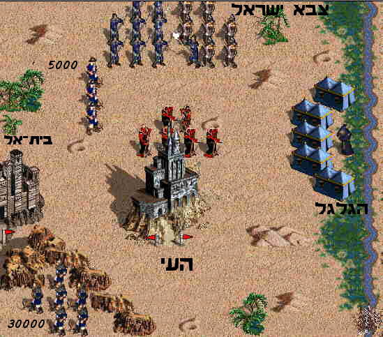

קוד: המארב המיותר? בתנ"ך
סוג: כלל_אזור
מאת: אראל
אל: מכתב
שים לך אורב לעיר מאחריה" (יהושע ח). אבל יהושע שם שני אורבים: בלילה הראשון אורב של 30000 ובלילה השני אורב של 5000.
יש כמה הבדלים בין האורבים:
ראו אתם אורבים לעיר מאחרי העיר, אל תרחיקו מן העיר מאוד; והייתם כולכם נכונים... ואתם תקומו מהאורב והורשתם את העיר... ראו ציוויתי אתכם". לאורב השני לא אמר יהושע דבר.
וישלחם יהושע וילכו אל המארב" ועל האורב השני נאמר "
וישם אותם אורב". נראה שהאורב הראשון היה רחוק יותר (לכן נאמר "וישלחם", ולכן הוא נשלח לילה אחד קודם, ולכן נאמר להם "אל תרחיקו מן העיר מאד" כלומר תרחיקו אבל לא יותר מדי), והאורב השני היה קרוב (לכן נאמר "וישם").
למה יהושע שלח שני אורבים?
שיעור בנושא זה הועבר במחוז מרכז בשנת ה'תש"ס, והמשתתפים הציעו הרבה
תשובות מקוריות, והתשובות התפרסמו ב'כפית של נח"ת' אלול ה'תש"ס (בעריכת
לאה קנטן).
זה היה תכסיס שמטרתו היתה לכתר את אנשי העי מכל הכיוונים (האורב הראשון מדרום-מערב, האורב השני מצפון-מערב, הצבא של יהושע מצפון, ושאר המחנה ממזרח - בגלגל):

ועוד שאלה: למה יהושע רצה לכתר את יושבי העי מכל הכיוונים? הרי זה ידוע שבמלחמה עדיף להשאיר לאויב פתח לבריחה, כדי שיברחו ולא יילחמו חזק מדי! וכך גם עשה גדעון במלחמתו נגד המדיינים!
לדעתי (אראל), יש הבדל בין המלחמה הזו לבין המלחמה של גדעון: לגדעון היה צבא קטן מאד, והמלחמה שלו התבססה על הפחד - הוא הפחיד את המדיינים וגרם להם לברוח, ואז רדף אחריהם והיכה בהם. אם הוא היה מכתר אותם מכל הכיוונים - הם היו מנצחים אותו בקלות. אבל ליהושע היה צבא גדול מאד, והמטרה העיקרית שלו במלחמה היתה להרוג את כל הכנענים ולא לתת לאף אחד לברוח.
[תשובה קצת דמיונית...]
יש מחלוקת בין אמוראים על הפירוש המדוייק של המילים 'אחר' ו'אחרי'
(ע' מדרש בראשית רבה, מד, ו): אחד אומר "כל מקום שנאמר 'אחר' = סמוך
[קרוב], 'אחרי' = מופלג [רחוק]" והשני אומר "כל מקום שנאמר 'אחרי' = סמוך,
'אחר' = מופלג". אמנם זה נאמר בהקשר של זמן, אבל ייתכן שאותה מחלוקת קיימת
גם בהקשר של מקום. לכן כשנאמר ליהושע "שים לך אורב לעיר מאחריה
" הוא לא ידע אם הכוונה
'מאחריה' רחוק או 'מאחריה' קרוב. ולכן, כדי לצאת ידי חובה לכל הדעות, הוא
שם שני אורבים -- אחד קרוב ואחד רחוק...
כשלומדים את טעמי המצוות צריך להיזהר ולא לחשוב שהטעמים שמצאנו הם
הטעמים היחידים. לדוגמא: לרמב"ם, שהיה רופא, נראה מאד הגיוני שהטעם לכל
המצוות של איסורי אכילה הוא בריאותי (כמו שכל רופא מנוסה אומר למטופליו
איזה מאכלים לאכול ואיזה לא לאכול כדי לשמור על בריאותם), אבל למרות זאת
-- אם היה מגלה שהמאכלים האסורים הם דווקא מועילים לבריאות -- הוא לא היה
אוכל אותם, כי למצוות האלו בוודאי יש עוד הרבה טעמים שידועים רק לה', ולכן
בכל מקרה צריך לקיים אותן כפשוטן ולא רק לקיים את טעמן. גם כאן -- כשאנו
קוראים את הציווי "שים לך אורב לעיר מאחריה
" נראה לנו מאד הגיוני שהטעם
שלו הוא צבאי -- ה' רצה ללמד את יהושע תכסיס מלחמתי שיעזור לו להשתלט על
העי. בימינו, ימי הציונות וצה"ל, אנחנו נמשכים במיוחד לפירושים כאלה...
אבל יהושע לא היה בטוח שזה הטעם היחיד של הציווי. הוא חשב "אולי יש עוד
טעם שידוע רק לה'". ולכן רצה גם לקיים את הציווי באופן מילולי. ובציווי לא
נאמר בכלל שהאורב צריך לקום מהמארב ולכבוש את העיר -- נאמר רק "שים לך אורב לעיר מאחריה
". אפשר להבין שה' התכוון
שהאורב יישאר במארב, מסיבה כלשהי שידועה רק לו. ולכן לאחר שיהושע שלח אורב
רגיל, כתכסיס צבאי, ונתן לו הנחיות מדוייקות איך לכבוש את העיר, הוא שם
עוד אורב -- ולהם הוא לא נתן שום הנחיות: רק שם אותם במארב למשך כל
המלחמה. לכן גם נאמר עליהם "וישם אותם אורב
" -- כדי להדגיש שיהושע קיים בהם באופן מילולי את הציווי "שים לך אורב
".
כשמתבוננים בספר יהושע מתחילתו אפשר להבין יותר את ההתלבטות של
יהושע. כי מתחילת הספר רואים שיהושע מנסה לעשות תכסיסים טבעיים, וה'
'רומז' לו בעדינות שזו לא הדרך: יהושע שלח שני מרגלים ליריחו, אבל הם לא
הביאו לו שום מידע צבאי (איך לכבוש את העיר, מאיפה לחדור, כמה חיילים לקחת
וכו') אלא רק אמרו "כי נתן ה' בידינו את הארץ
" -- אפשר לבטוח בה'... ואכן
יריחו נכבשה בנס. אח"כ יהושע שלח מרגלים לעי, והם הביאו לו מידע צבאי אבל
המידע היה מוטעה... ולכן כשה' אמר לו "שים לך אורב
" הוא היה מאד מופתע -- "מה פתאום ה' אומר לי להשתמש בתכסיסים טבעיים? זו בטח לא הכוונה היחידה -- בטח יש עוד טעם למצווה".
{kind=link}